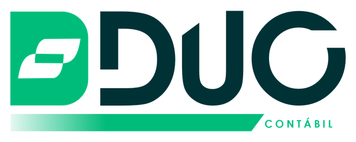

Clientes
Empresas que já atravessaram a porta com a gente.
Negócios de diferentes áreas que já contam com a Janus para cuidar da tecnologia e da presença digital.

Duo Contábil — Escritório de Contabilidade
Escritório de contabilidade com atendimento em todo o Brasil, especializado em MEI, ME e Simples Nacional. Até o momento, a Janus atuou na configuração do perfil do Google Meu Negócio.
MineraSul — Indústria e Comércio de Agregados Ltda.
Empresa do setor de mineração e construção civil, dedicada à indústria e ao comércio de agregados, os materiais usados em obras e empreendimentos. Até o momento, a Janus atuou na configuração do perfil do Google Meu Negócio, para que a empresa seja encontrada por quem busca esses produtos na região.
Marazul Confecções
A Marazul Confecções fabrica roupas de proteção em oleado desde 2017. Produz casacos de oleado (azul ou amarelo), casacos transparentes, jardineiras de oleado e aventais de açougueiro: peças impermeáveis e resistentes para quem trabalha na pesca marítima, em peixarias, açougues e supermercados. Atende pescadores, empresas e comércios. Proteção é tudo!
A Janus atuou na configuração do perfil do Google Meu Negócio da empresa.
Sua empresa pode ser o próximo case da Janus.
Vamos conversar sobre onde você está hoje e o que falta para chegar no próximo nível.